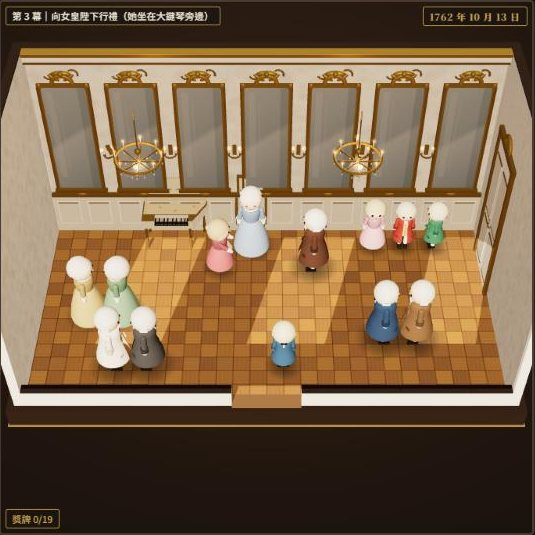
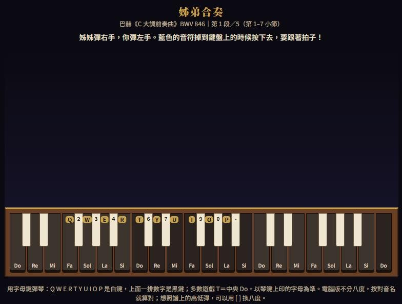

音樂家的人生：莫札特 第一章A Musician's Life: Mozart, Chapter 1 ／ 音楽家の人生：モーツァルト 第1章
支援與聯絡
《音樂家的人生》是一款讓你走進作曲家一生的 3D 遊戲。第一章的主角是小時候的莫札特，從薩爾斯堡的家出發，跟著爸爸和姊姊到歐洲各地旅行、演奏。遊戲由鋼琴老師葉宸佑製作，內容根據真實歷史改編（絕大部分是真的，少數地方為了遊戲做了調整）。
有問題、發現錯誤、想給意見，請寫信：chenyouye493@gmail.com。
常見問題
需要網路嗎？不用。下載之後完全可以離線玩，沒有廣告，沒有內購。
怎麼換語言？預設會跟著手機的語言（繁體中文、English、日本語）。標題畫面上也有三個語言按鈕，可以隨時切換，進度不會不見。
進度存在哪裡？存在這支手機裡，不會上傳到網路。刪除 App 的話，進度會一起刪除。
沒有聲音？請把手機音量調大，並確認遊戲設定裡的背景音樂沒有關掉。
為什麼是第一章？這是系列的第一章。第二章「少年與義大利」製作中。
電腦版（Windows）下載版
NT$150 一次買斷，沒有廣告、沒有內購
即將開賣（金流申請中）
走進神童莫札特的童年：從薩爾斯堡的家出發，跟著爸爸和姊姊到維也納、慕尼黑、巴黎旅行、演奏，一路上有 16 個音樂小遊戲（彈琴、聽音、合奏、視奏、賽馬車……）。用電腦鍵盤玩：方向鍵或 WASD 走路，字母鍵彈白鍵、數字鍵彈黑鍵，琴鍵上會印出對應的按鍵。繁體中文、English、日本語，完全離線。


- 系統需求：Windows 10 或 11（64 位元），約 400 MB 硬碟空間。目前沒有 Mac 版。
- 怎麼拿到遊戲：付款（綠界科技）成功後，畫面上會出現下載按鈕，也會寄到你填的 email。
- 退款：下載版數位內容，經你購買時同意後不適用七日解除權；檔案損壞或在符合需求的電腦上無法執行，請來信，無法解決時退款。詳細說明在購買頁。
- 購買與付款問題：請寫信到 wilson0905189796@gmail.com（賣家：葉宸佑）
- iPhone 版是另一個商品，請到 App Store 購買（審查中）。
Support & Contact
"A Musician's Life" is a 3D game that lets you walk through a composer's life. Chapter 1 follows young Mozart from his family home in Salzburg on a grand tour of Europe with his father and sister. It is made by piano teacher Chen-Yu Yeh and is based on real history: almost everything really happened, and a few details were adjusted for the game.
Questions, bug reports or feedback? Email chenyouye493@gmail.com.
FAQ
Does it need internet? No. After downloading you can play fully offline. No ads, no in-app purchases.
How do I change the language? The game follows your phone's language (Traditional Chinese, English, Japanese). There are also three language buttons on the title screen; your progress is kept.
Where is my progress saved? On your device; nothing is uploaded. Deleting the app also deletes your progress.
No sound? Turn the volume up and check that background music is not switched off in the game settings.
Why Chapter 1? This is the first chapter of a series. Chapter 2, "The Boy and Italy", is in the works.
サポート・お問い合わせ
『音楽家の人生』は、作曲家の一生を自分の足で歩く3Dゲームです。第1章の主人公は子どものころのモーツァルト。ザルツブルクの家を出て、パパとお姉ちゃんといっしょにヨーロッパ各地を旅します。ピアノ教師の葉宸佑（Chen-Yu Yeh）が制作しました。内容は史実をもとにしていて、ほとんどが本当のことですが、ゲームのために少しだけ変えたところがあります。
ご質問・不具合・ご意見は chenyouye493@gmail.com までお送りください。
よくある質問
インターネットは必要ですか？いいえ。ダウンロードしたあとはオフラインで遊べます。広告もアプリ内課金もありません。
言語の変えかたは？スマートフォンの言語（繁体字中国語・英語・日本語）に自動で合わせます。タイトル画面の3つのボタンでいつでも切りかえられます（進みぐあいは消えません）。
データはどこに保存されますか？この端末の中に保存され、インターネットには送られません。アプリを削除すると、進みぐあいもいっしょに消えます。
音が出ません。端末の音量を上げて、ゲームの設定でBGMがオフになっていないか確認してください。
なぜ第1章なのですか？これはシリーズの第1章です。第2章「少年とイタリア」を制作中です。